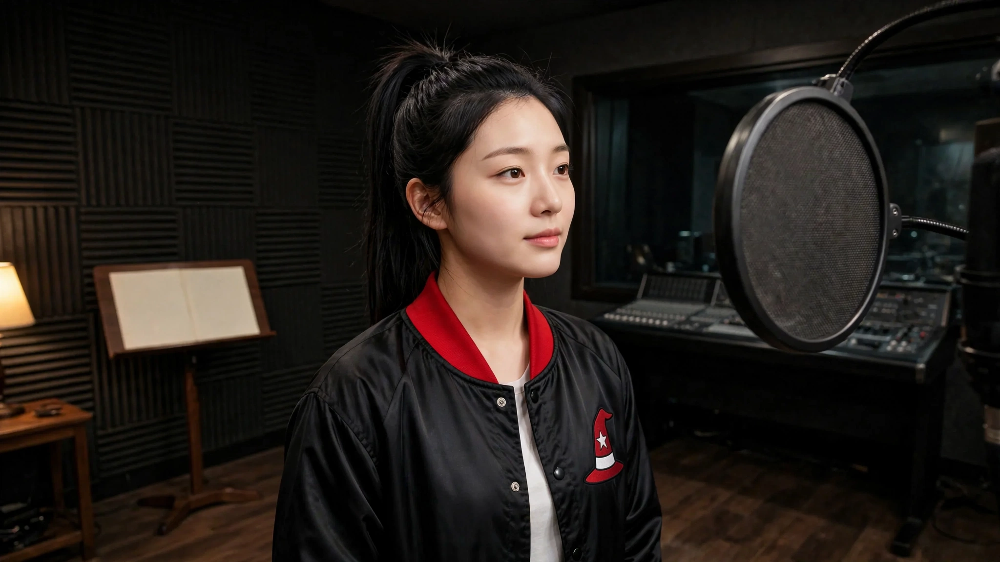
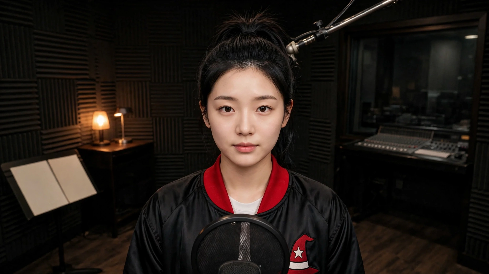
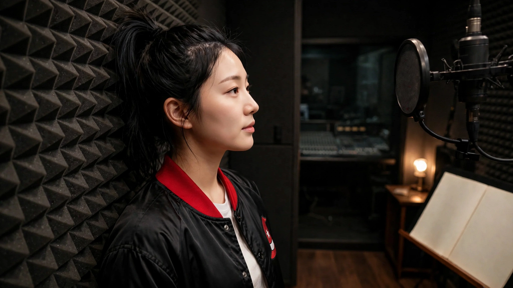
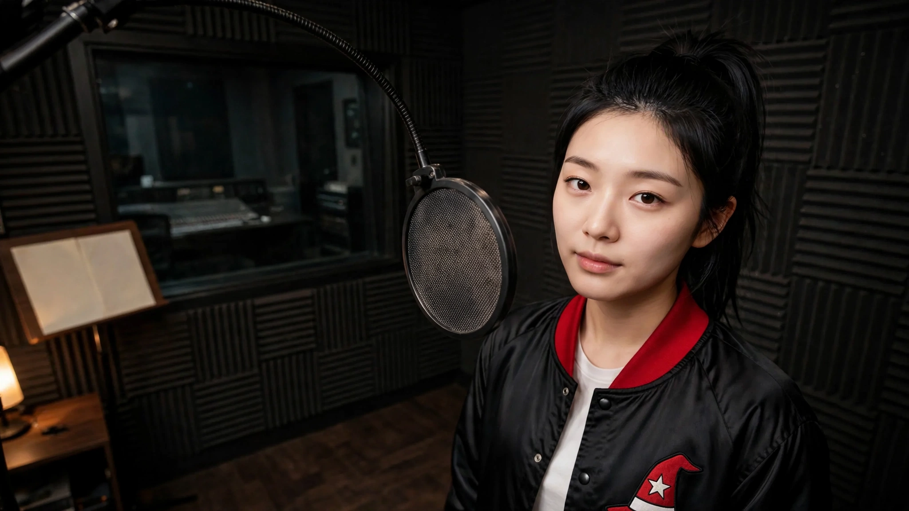

배정표를 글로만 보시면 판단이 어렵다 하셔서 그림으로 뽑았습니다. 사람·옷·방·엠블럼은 전부 그대로이고 구도만 다릅니다 — 프레이밍·자세·카메라 세 줄만 갈았습니다. 정지 이미지이고 영상이 아닙니다. 4장 $0.04.
방 문단·옷 문단은 이미 승인하신 T18 인물 판에서 글자 그대로 가져왔습니다. 네 벌에 따로 적으면 반드시 어긋나므로(T12가 그렇게 갈렸습니다) 몸통은 생성기 한 곳에만 두었습니다.
기준 — 지금까지 쓰던 인물 판 (승인본)




C40·C41 둘 다 low(카메라가 턱 아래에서 올려다봄)로 발주했는데, 나온 그림은 눈높이이거나 오히려 살짝 내려다봅니다. 제 눈이 아니라 화면에 있는 것으로 말씀드리면:
⇒ 네 장이 서로 달라 보이는 것은 사실이지만, 그 차이는 「높이」가 아니라 「방향·위치」가 만들고 있습니다(어깨너머 / 정면 / 측면 / 오른쪽). 배정표에서 low를 다양성의 근거로 세면 실제로는 안 갈립니다. 높이를 쓰시려면 참조 그림 자체를 낮게 잡거나, 천장이 프레임에 들어오게 못박아야 할 것 같습니다.
| 구도 | 축 | 종류 | 바꾼 것 |
|---|---|---|---|
| C6 | eye/xcu/right/stand/over-shoulder | 검증 | 프레이밍 · 자세 · CAMERA · 금지 한 줄(두 번째 사람) |
| C8 | eye/xcu/center/stand/front | 검증 | 프레이밍 · 자세 · CAMERA |
| C40 | low/xcu/center/lean/profile | 고유 | 프레이밍 · 자세 · CAMERA |
| C41 | low/xcu/right/stand/front | 고유 | 프레이밍 · 자세 · CAMERA |
배정표 정본 CONFIRMED/2.0/SHOTPLAN.json · 검사 check_shotplan.py 0건 ·
생성기 scripts/make_t18_shotplan_kf.py(몸통이 여기 한 곳에만 있습니다) ·
프롬프트 docs/2.0/prompts/T18/keyframe/T18_KF_woman_C*.txt
62벌 재제작은 대표님이 T12·T15·T18 세 팀 그림을 보신 뒤입니다.